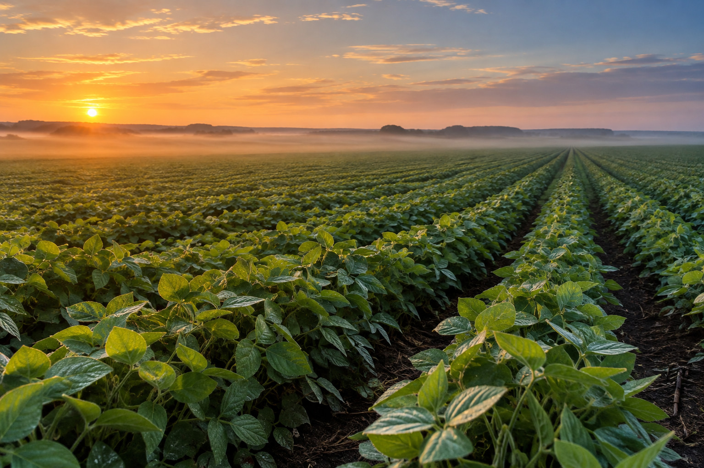

O clima muda sem avisar. O alerta não.

Quatro recursos, um sistema
As soluções existentes tratam clima, insumo e mercado separadamente. Aqui os três conversam.
Monitoramento climático
Alertas de chuva, seca e geada por cultura e fase de desenvolvimento, a partir de regras fixas sobre uma API de clima.
Recomendação de insumos
Cada alerta gerado aponta a categoria de insumo correspondente, por mapeamento direto entre risco e manejo.
Comparação de preços
Ranking de custo-benefício entre fornecedores, sobre base de preços simulada, sem coleta ao vivo.
Análise de mercado com IA
Série histórica do CEPEA e notícias curadas alimentam um resumo qualitativo de tendência gerado por IA, com as fontes ao lado.
Alerta, recomendação, compra
O risco é detectado
A previsão entra no motor de regras junto com a cultura e a fase do talhão. Geada em florada do café não é o mesmo risco que geada em pós-colheita.
O manejo é sugerido
O alerta chega com a categoria de insumo indicada para aquele risco e a janela em que a aplicação ainda faz diferença.
O preço é comparado
Fornecedores são ordenados por custo total, com frete e prazo de entrega, porque insumo que chega tarde não resolve o alerta.
Café e soja, por escolha
As duas culturas de maior peso econômico no agronegócio mineiro, e as que melhor exercitam cada frente do sistema.
Café
Maior produtor nacional. Responde por 35% do valor bruto da produção agrícola mineira em 2025, R$ 58,7 bilhões.
Cultura perene e muito sensível a geada e variação climática, é o caso mais rico para o módulo de alertas.
Soja
Segunda principal cultura agrícola do estado, com R$ 18,8 bilhões em 2025.
Forte ligação com mercado internacional e câmbio, é o caso ideal para o módulo de análise de mercado com IA.
Um protótipo de pesquisa aplicada
O AgroAlerta é um trabalho de conclusão de curso em Engenharia de Software, desenvolvido como protótipo sob os princípios de Design Science Research. A proposta responde a uma pergunta prática: como ajudar pequenos e médios produtores a antecipar o risco climático da safra, comparar o custo dos insumos e entender a tendência de mercado em um só lugar. A arquitetura é modular por decisão de projeto: cada recurso entrega valor sozinho e pode ser validado em separado.
{{ slideNota }}
Fontes de dados
Cada recurso é alimentado por uma fonte pública ou por curadoria declarada, nada é estimado sem origem.
API de clima
Previsão e série histórica por coordenada do talhão.
Recurso 1Cepea/USP
Série de preços do café arábica e da soja.
Recurso 4Seapa/MG · IBGE · Conab
Dados regionais de safra e valor da produção, 2025.
ContextoNotícias de mercado
Curadoria manual, com a fonte visível em cada análise.
Recurso 4